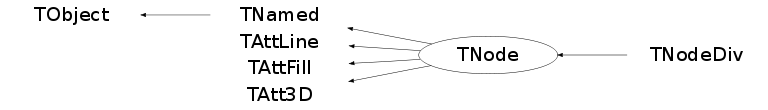

class TNode: public TNamed, public TAttLine, public TAttFill, public TAtt3D
T N O D E description
A TNode object is used to build the geometry hierarchy (see TGeometry).
A node may contain other nodes.
A geometry node has attributes:
- name and title
- pointer to the referenced shape (see TShape).
- x,y,z offset with respect to the mother node.
- pointer to the rotation matrix (see TRotMatrix).
A node can be drawn.
Function Members (Methods)
public:
| TNode() | |
| TNode(const char* name, const char* title, const char* shapename, Double_t x = 0, Double_t y = 0, Double_t z = 0, const char* matrixname = "", Option_t* option = "") | |
| TNode(const char* name, const char* title, TShape* shape, Double_t x = 0, Double_t y = 0, Double_t z = 0, TRotMatrix* matrix = 0, Option_t* option = "") | |
| virtual | ~TNode() |
| void | TObject::AbstractMethod(const char* method) const |
| virtual void | TObject::AppendPad(Option_t* option = "") |
| virtual void | Browse(TBrowser* b) |
| virtual void | BuildListOfNodes() |
| virtual void | cd(const char* path = 0)MENU |
| static TClass* | Class() |
| virtual const char* | TObject::ClassName() const |
| virtual void | TNamed::Clear(Option_t* option = "") |
| virtual TObject* | TNamed::Clone(const char* newname = "") const |
| virtual Int_t | TNamed::Compare(const TObject* obj) const |
| virtual void | TNamed::Copy(TObject& named) const |
| virtual void | TObject::Delete(Option_t* option = "")MENU |
| Int_t | TAttLine::DistancetoLine(Int_t px, Int_t py, Double_t xp1, Double_t yp1, Double_t xp2, Double_t yp2) |
| virtual Int_t | DistancetoPrimitive(Int_t px, Int_t py) |
| virtual void | Draw(Option_t* option = "")MENU |
| virtual void | TObject::DrawClass() constMENU |
| virtual TObject* | TObject::DrawClone(Option_t* option = "") constMENU |
| virtual void | DrawOnly(Option_t* option = "") |
| virtual void | TObject::Dump() constMENU |
| virtual void | TObject::Error(const char* method, const char* msgfmt) const |
| virtual void | TObject::Execute(const char* method, const char* params, Int_t* error = 0) |
| virtual void | TObject::Execute(TMethod* method, TObjArray* params, Int_t* error = 0) |
| virtual void | ExecuteEvent(Int_t event, Int_t px, Int_t py) |
| virtual void | TObject::Fatal(const char* method, const char* msgfmt) const |
| virtual void | TNamed::FillBuffer(char*& buffer) |
| virtual TObject* | TObject::FindObject(const char* name) const |
| virtual TObject* | TObject::FindObject(const TObject* obj) const |
| virtual Option_t* | TObject::GetDrawOption() const |
| static Long_t | TObject::GetDtorOnly() |
| virtual Color_t | TAttFill::GetFillColor() const |
| virtual Style_t | TAttFill::GetFillStyle() const |
| virtual const char* | TObject::GetIconName() const |
| virtual Color_t | TAttLine::GetLineColor() const |
| virtual Style_t | TAttLine::GetLineStyle() const |
| virtual Width_t | TAttLine::GetLineWidth() const |
| TList* | GetListOfNodes() const |
| virtual TRotMatrix* | GetMatrix() const |
| virtual const char* | TNamed::GetName() const |
| virtual TNode* | GetNode(const char* name) const |
| virtual char* | GetObjectInfo(Int_t px, Int_t py) const |
| static Bool_t | TObject::GetObjectStat() |
| virtual Option_t* | GetOption() const |
| virtual TNode* | GetParent() const |
| TShape* | GetShape() const |
| virtual const char* | TNamed::GetTitle() const |
| virtual UInt_t | TObject::GetUniqueID() const |
| Int_t | GetVisibility() const |
| virtual Double_t | GetX() const |
| virtual Double_t | GetY() const |
| virtual Double_t | GetZ() const |
| virtual Bool_t | TObject::HandleTimer(TTimer* timer) |
| virtual ULong_t | TNamed::Hash() const |
| virtual void | ImportShapeAttributes() |
| virtual void | TObject::Info(const char* method, const char* msgfmt) const |
| virtual Bool_t | TObject::InheritsFrom(const char* classname) const |
| virtual Bool_t | TObject::InheritsFrom(const TClass* cl) const |
| virtual void | TObject::Inspect() constMENU |
| void | TObject::InvertBit(UInt_t f) |
| virtual TClass* | IsA() const |
| virtual Bool_t | TObject::IsEqual(const TObject* obj) const |
| virtual Bool_t | IsFolder() const |
| Bool_t | TObject::IsOnHeap() const |
| virtual Bool_t | TNamed::IsSortable() const |
| virtual Bool_t | TAttFill::IsTransparent() const |
| Bool_t | TObject::IsZombie() const |
| virtual void | Local2Master(const Double_t* local, Double_t* master) |
| virtual void | Local2Master(const Float_t* local, Float_t* master) |
| virtual void | ls(Option_t* option = "2") constMENU |
| virtual void | Master2Local(const Double_t* master, Double_t* local) |
| virtual void | Master2Local(const Float_t* master, Float_t* local) |
| void | TObject::MayNotUse(const char* method) const |
| virtual void | TAttLine::Modify() |
| virtual Bool_t | TObject::Notify() |
| void | TObject::Obsolete(const char* method, const char* asOfVers, const char* removedFromVers) const |
| static void | TObject::operator delete(void* ptr) |
| static void | TObject::operator delete(void* ptr, void* vp) |
| static void | TObject::operator delete[](void* ptr) |
| static void | TObject::operator delete[](void* ptr, void* vp) |
| void* | TObject::operator new(size_t sz) |
| void* | TObject::operator new(size_t sz, void* vp) |
| void* | TObject::operator new[](size_t sz) |
| void* | TObject::operator new[](size_t sz, void* vp) |
| virtual void | Paint(Option_t* option = "") |
| virtual void | TObject::Pop() |
| virtual void | TNamed::Print(Option_t* option = "") const |
| virtual Int_t | TObject::Read(const char* name) |
| virtual void | RecursiveRemove(TObject* obj) |
| virtual void | TAttFill::ResetAttFill(Option_t* option = "") |
| virtual void | TAttLine::ResetAttLine(Option_t* option = "") |
| void | TObject::ResetBit(UInt_t f) |
| virtual void | TObject::SaveAs(const char* filename = "", Option_t* option = "") constMENU |
| virtual void | TAttFill::SaveFillAttributes(ostream& out, const char* name, Int_t coldef = 1, Int_t stydef = 1001) |
| virtual void | TAttLine::SaveLineAttributes(ostream& out, const char* name, Int_t coldef = 1, Int_t stydef = 1, Int_t widdef = 1) |
| virtual void | TObject::SavePrimitive(ostream& out, Option_t* option = "") |
| void | TObject::SetBit(UInt_t f) |
| void | TObject::SetBit(UInt_t f, Bool_t set) |
| virtual void | TObject::SetDrawOption(Option_t* option = "")MENU |
| static void | TObject::SetDtorOnly(void* obj) |
| virtual void | TAttFill::SetFillAttributes()MENU |
| virtual void | TAttFill::SetFillColor(Color_t fcolor) |
| virtual void | TAttFill::SetFillStyle(Style_t fstyle) |
| virtual void | TAttLine::SetLineAttributes()MENU |
| virtual void | TAttLine::SetLineColor(Color_t lcolor) |
| virtual void | TAttLine::SetLineStyle(Style_t lstyle) |
| virtual void | TAttLine::SetLineWidth(Width_t lwidth) |
| virtual void | SetMatrix(TRotMatrix* matrix = 0) |
| virtual void | SetName(const char* name) |
| virtual void | SetNameTitle(const char* name, const char* title) |
| static void | TObject::SetObjectStat(Bool_t stat) |
| virtual void | SetParent(TNode* parent) |
| virtual void | SetPosition(Double_t x = 0, Double_t y = 0, Double_t z = 0) |
| virtual void | TNamed::SetTitle(const char* title = "")MENU |
| virtual void | TObject::SetUniqueID(UInt_t uid) |
| virtual void | SetVisibility(Int_t vis = 1)MENU |
| virtual void | ShowMembers(TMemberInspector& insp) |
| virtual Int_t | TNamed::Sizeof() const |
| virtual void | Sizeof3D() const |
| virtual void | Streamer(TBuffer& b) |
| void | StreamerNVirtual(TBuffer& b) |
| virtual void | TObject::SysError(const char* method, const char* msgfmt) const |
| Bool_t | TObject::TestBit(UInt_t f) const |
| Int_t | TObject::TestBits(UInt_t f) const |
| virtual void | UpdateMatrix() |
| virtual void | UpdateTempMatrix(const Double_t* dx1, const Double_t* rmat1, Double_t x, Double_t y, Double_t z, Double_t* matrix, Double_t* dxnew, Double_t* rmatnew) |
| virtual void | TObject::UseCurrentStyle() |
| virtual void | TObject::Warning(const char* method, const char* msgfmt) const |
| virtual Int_t | TObject::Write(const char* name = 0, Int_t option = 0, Int_t bufsize = 0) |
| virtual Int_t | TObject::Write(const char* name = 0, Int_t option = 0, Int_t bufsize = 0) const |
protected:
| TNode(const TNode&) | |
| virtual void | TObject::DoError(int level, const char* location, const char* fmt, va_list va) const |
| void | TObject::MakeZombie() |
| TNode& | operator=(const TNode&) |
Data Members
public:
| enum { | kSonsInvisible | |
| }; | ||
| enum TObject::EStatusBits { | kCanDelete | |
| kMustCleanup | ||
| kObjInCanvas | ||
| kIsReferenced | ||
| kHasUUID | ||
| kCannotPick | ||
| kNoContextMenu | ||
| kInvalidObject | ||
| }; | ||
| enum TObject::[unnamed] { | kIsOnHeap | |
| kNotDeleted | ||
| kZombie | ||
| kBitMask | ||
| kSingleKey | ||
| kOverwrite | ||
| kWriteDelete | ||
| }; |
protected:
| Color_t | TAttFill::fFillColor | fill area color |
| Style_t | TAttFill::fFillStyle | fill area style |
| Color_t | TAttLine::fLineColor | line color |
| Style_t | TAttLine::fLineStyle | line style |
| Width_t | TAttLine::fLineWidth | line width |
| TRotMatrix* | fMatrix | Pointer to rotation matrix |
| TString | TNamed::fName | object identifier |
| TList* | fNodes | List of son nodes (if any) |
| TString | fOption | List of options if any |
| TNode* | fParent | Pointer to parent positioned volume |
| TShape* | fShape | Pointer to shape definition |
| TString | TNamed::fTitle | object title |
| Int_t | fVisibility | Visibility flag |
| Double_t | fX | X offset with respect to parent object |
| Double_t | fY | Y offset with respect to parent object |
| Double_t | fZ | Z offset with respect to parent object |
Class Charts
{kind=link}
{kind=link}
{kind=link}
{kind=link}

Function documentation
TNode(const char* name, const char* title, const char* shapename, Double_t x = 0, Double_t y = 0, Double_t z = 0, const char* matrixname = "", Option_t* option = "")
Node normal constructor.
name is the name of the node
title is title
shapename is the name of the referenced shape
x,y,z are the offsets of the volume with respect to his mother
matrixname is the name of the rotation matrix
This new node is added into the list of sons of the current node
TNode(const char* name, const char* title, TShape* shape, Double_t x = 0, Double_t y = 0, Double_t z = 0, TRotMatrix* matrix = 0, Option_t* option = "")
Node normal constructor.
name is the name of the node
title is title
shape is the pointer to the shape definition
x,y,z are the offsets of the volume with respect to his mother
matrix is the pointer to the rotation matrix
This new node is added into the list of sons of the current node
Int_t DistancetoPrimitive(Int_t px, Int_t py)
Compute distance from point px,py to a Node. Compute the closest distance of approach from point px,py to this node. The distance is computed in pixels units.
void ExecuteEvent(Int_t event, Int_t px, Int_t py)
Execute action corresponding to one event. This member function must be implemented to realize the action corresponding to the mouse click on the object in the window
void Local2Master(const Double_t* local, Double_t* master)
Convert one point from local system to master reference system. Note that before invoking this function, the global rotation matrix and translation vector for this node must have been computed. This is automatically done by the Paint functions. Otherwise TNode::UpdateMatrix should be called before.
void Local2Master(const Float_t* local, Float_t* master)
Convert one point from local system to master reference system. Note that before invoking this function, the global rotation matrix and translation vector for this node must have been computed. This is automatically done by the Paint functions. Otherwise TNode::UpdateMatrix should be called before.
void Master2Local(const Double_t* master, Double_t* local)
Convert one point from master system to local reference system. Note that before invoking this function, the global rotation matrix and translation vector for this node must have been computed. This is automatically done by the Paint functions. Otherwise TNode::UpdateMatrix should be called before.
void Master2Local(const Float_t* master, Float_t* local)
Convert one point from master system to local reference system. Note that before invoking this function, the global rotation matrix and translation vector for this node must have been computed. This is automatically done by the Paint functions. Otherwise TNode::UpdateMatrix should be called before.
void Paint(Option_t* option = "")
Paint Referenced node with current parameters. vis = 1 (default) shape is drawn vis = 0 shape is not drawn but its sons may be not drawn vis = -1 shape is not drawn. Its sons are not drawn vis = -2 shape is drawn. Its sons are not drawn
void SetParent(TNode* parent)
Set the pointer to the parent, keep parents informed about who they have
void SetVisibility(Int_t vis = 1)
Set visibility for this node and its sons. vis = 3 node is drawn and its sons are drawn vis = 2 node is not drawn but its sons are drawn vis = 1 (default) node is drawn vis = 0 node is not drawn vis = -1 node is not drawn. Its sons are not drawn vis = -2 node is drawn. Its sons are not drawn vis = -3 Only node leaves are drawn vis = -4 Node is not drawn. Its immediate sons are drawn
void UpdateMatrix()
Update global rotation matrix/translation vector for this node this function must be called before invoking Local2Master
void UpdateTempMatrix(const Double_t* dx1, const Double_t* rmat1, Double_t x, Double_t y, Double_t z, Double_t* matrix, Double_t* dxnew, Double_t* rmatnew)
Compute new translation vector and global matrix. dx old translation vector rmat old global matrix x,y,z offset of new local system with respect to mother dxnew new translation vector rmatnew new global rotation matrix